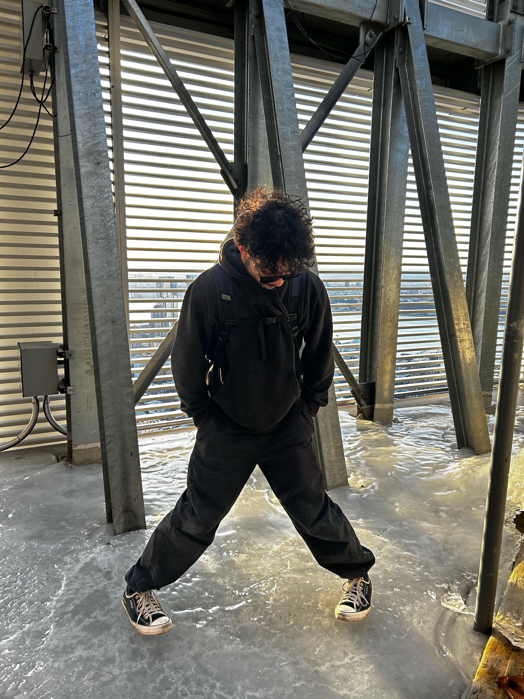

𝑩𝒆𝒍𝒐𝒘 𝒂𝒓𝒆 𝒍𝒊𝒏𝒌𝒔 𝒅𝒊𝒓𝒆𝒄𝒕𝒊𝒏𝒈 𝒕𝒐 𝒎𝒚 𝒉𝒐𝒎𝒆𝒘𝒐𝒓𝒌 𝒓𝒆𝒔𝒑𝒐𝒏𝒔𝒆𝒔 𝒂𝒏𝒅 𝒑𝒓𝒐𝒋𝒆𝒄𝒕𝒔.
Saqib's Writing Responses
Resizing and Cropping Project
Saqib's Depth of Field Project
Saqib's Photoshopped Projects
New Exclusive Page

A little statement about Saqib Ahmed below
Hi I am Saqib Ahmed, my work primarily focuses on the memorable montages of family vacations within the 50 states or out the country. Yea it may seem basic to mashup footage and add a song to it to make a cringe video, however to me its a memorable moment that I can always reopen to whenever I miss my family. I always use the tools I have like my drone, my action camera, my phone, and of course the external hard drives and editing softwares to make everything come to a point. It always ends up giving people a tear drop of joy seeing all the memories made as time flew by. My motto when filming and taking photos is mostly that it's not about the place, it's about the people that create the story.